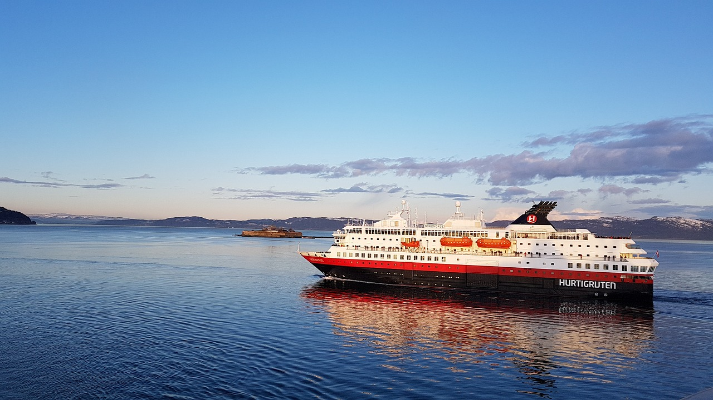
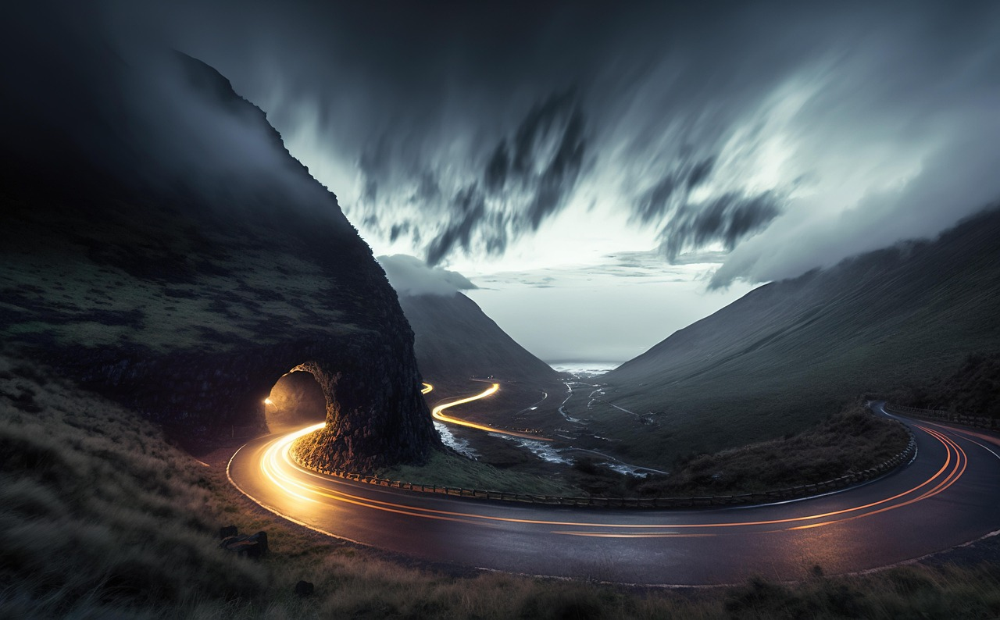

Wie man reisen kann – Langstrecken
Wenn das Ziel weit entfernt ist, beginnt das Abenteuer schon auf dem Weg dorthin.
Was bedeutet Langstrecke?
Von Langstrecken spricht man, wenn das Reiseziel mehrere hundert oder sogar tausende Kilometer entfernt ist – also meist außerhalb des eigenen Landes oder Kontinents. Solche Reisen erfordern mehr Planung, Zeit und die Wahl eines geeigneten Verkehrsmittels.
Ob Urlaubsreise, Geschäftsreise oder Weltreise – bei Langstrecken geht es darum, komfortabel, sicher und möglichst effizient ans Ziel zu kommen.

Verkehrsmittel für Langstrecken
Für weite Entfernungen kommen meist Verkehrsmittel zum Einsatz, die große Distanzen in kurzer Zeit überbrücken können:

Planung ist alles
Bei Langstreckenreisen spielt die Vorbereitung eine große Rolle. Man sollte sich über Visa, Impfungen, Reisedokumente, Versicherungen und das Klima am Zielort informieren. Auch die Wahl der Route und eventuelle Zwischenstopps können den Unterschied zwischen Stress und Entspannung ausmachen.
Wer frühzeitig plant, kann Geld sparen und seine Reise nachhaltiger gestalten – zum Beispiel durch Zugreisen statt Kurzstreckenflüge oder durch CO₂-Kompensation.
Nachhaltigkeit auf langen Reisen
Langstreckenflüge belasten die Umwelt besonders stark. Deshalb ist es wichtig, sich Gedanken über umweltfreundlichere Alternativen zu machen. Oft lässt sich ein Teil der Strecke mit dem Zug oder Bus zurücklegen, und manche Reisen können durch virtuelle Treffen ersetzt werden.
Wer doch fliegen muss, kann CO₂-Kompensationsprojekte unterstützen oder bewusst längere Aufenthalte planen – so wird aus einer weiten Reise mehr als nur ein Kurztrip.
